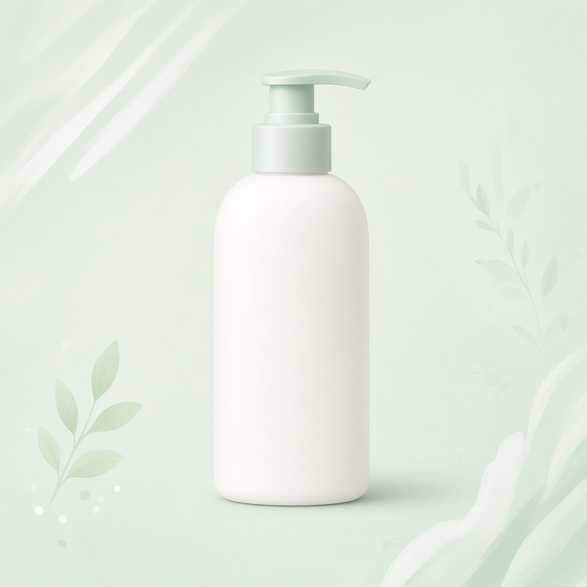

Gambar: ilustrasi, bukan foto produk asli.
Perawatan tubuhUlasan: Serum Gliserin 5% Niacinamide Losyen Badan
Situs ini memuat link afiliasi Shopee; kami bisa mendapat komisi tanpa biaya tambahan untukmu.
| Harga | Rp43.998 |
| Rating | ★ 4.9 / 5 |
| Terjual | 7RB+ |
Data per 25 Okt 2026, bisa berubah. Cek halaman Shopee untuk info terbaru.
Ringkasan
Losyen badan berisi gliserin dan niacinamide 5% (sesuai nama produk), sekitar Rp43.998. Terjual 7RB+ dengan rating 4,9. Klaim hasil di judul toko adalah klaim penjual; kami tidak menguji efeknya.
Cocok untuk
- Yang mencari losyen harian dengan kandungan yang tertulis jelas
- Yang ingin membandingkan losyen berdasarkan bahan
Kelebihan
- Rating 4,9 dari ribuan pembeli
- Kandungan utama disebut di nama produk
Perlu diperhatikan
- Hasil perawatan kulit berbeda tiap orang; klaim penjual bukan jaminan
- Coba sedikit dulu (patch test) bila kulit sensitif
- Paling mahal di antara 10 produk ini
Ulasan ini berdasarkan data produk dan rating pembeli, bukan pengalaman pemakaian pribadi.
Beli di ShopeeCerita singkat (fiksi)
Botol losyen di kamar mandi kos merasa dirinya bintang. Setiap pagi ia berpose di rak, menunggu dipilih. Ketika penghuni kos akhirnya meraihnya, ia berbisik pada sabun: "Lihat? Aku main peran utama hari ini." Sabun hanya berbusa diam.